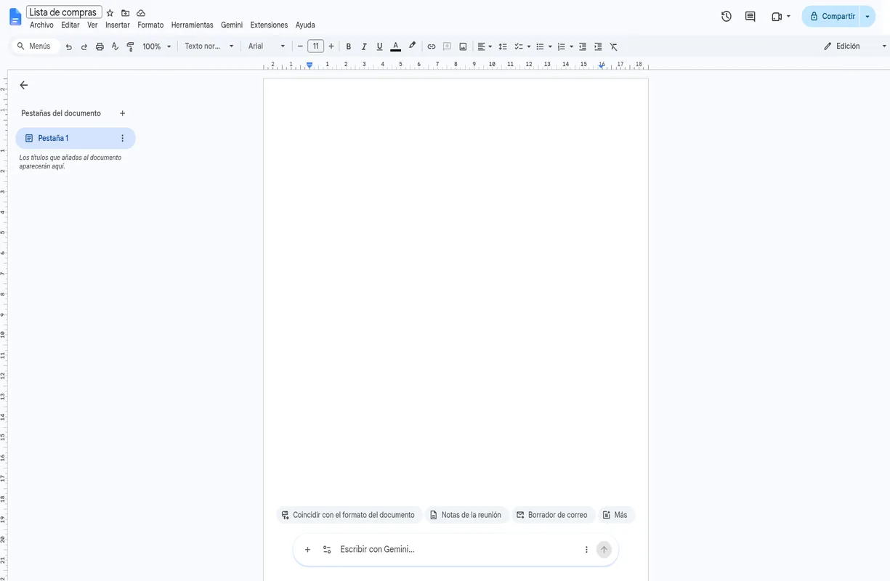
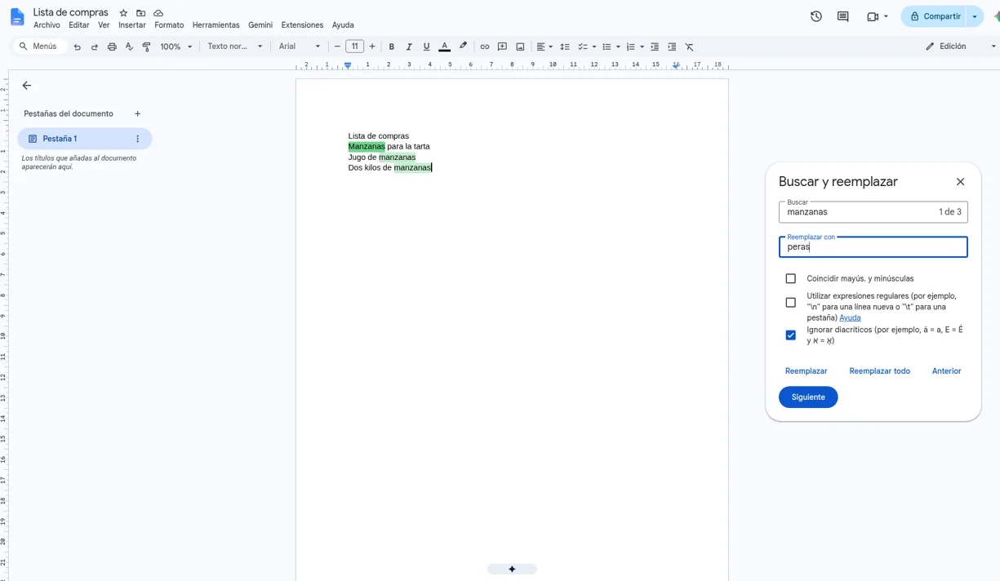
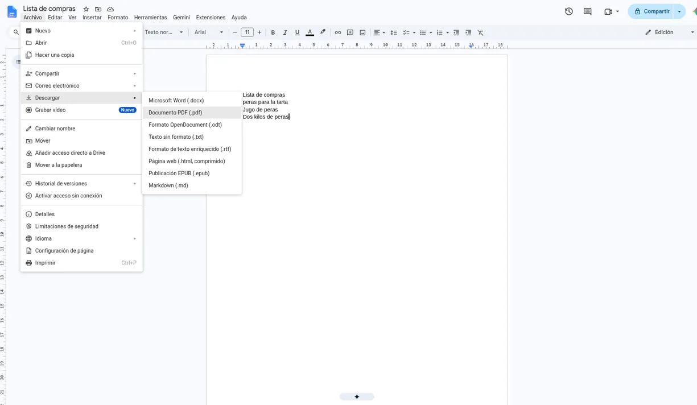
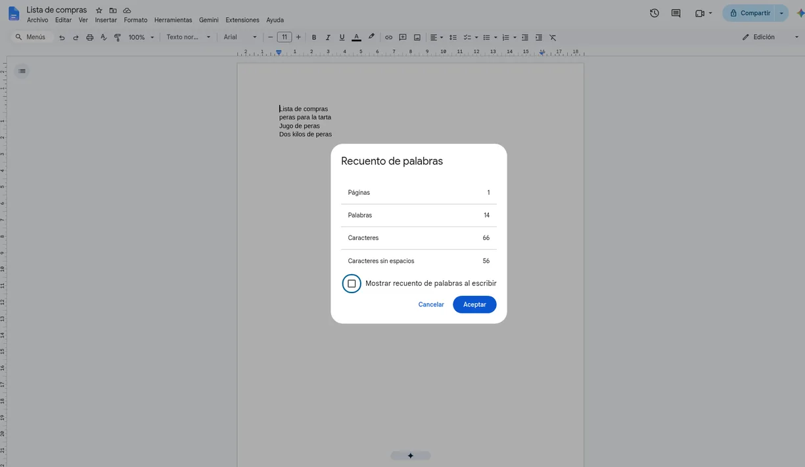

Curso de Google Documentos › Bloque 1 – Lo básico
Video largo · Bloque 1 – Lo básico
Google Docs para principiantes: lo básico paso a paso
Fecha del video: · Programado
Mirá el video completo
Estreno del video: 21/11/2026 · 09:00 (hora Argentina)
¿Recién empezás con Google Docs? Este video junta los 5 tutoriales del Bloque 1 en un recorrido de 3 minutos. Abajo tenés cada parte resumida, con su captura y el link a la lección completa y a su Short.
Capítulos: 00:00 Introducción · 00:14 Crear un documento · 00:49 Buscar y reemplazar · 01:31 Formato de texto · 02:12 Descargar en PDF · 02:42 Contar palabras · 03:10 Resumen.
1. Crear un documento
Entrá a docs.google.com, tocá «Documento en blanco» y después tocá «Documento sin título» para ponerle nombre. Se guarda solo en Drive.

Lección: Cómo crear un documento en Google Docs en 3 pasos · Short
2. Buscar y reemplazar
Editar → Buscar y reemplazar (Ctrl + H), escribí la palabra vieja en «Buscar» y la nueva en «Reemplazar con», y tocá «Reemplazar todo».

Lección: Cómo buscar y reemplazar una palabra en Google Docs · Short
3. Negrita, tamaño y color
Seleccioná el texto, tocá la B (Ctrl + B), elegí el Tamaño de fuente y cambiá el color con la A de «Color del texto».

Lección: Cómo poner negrita, cambiar tamaño y color de letra · Short
4. Descargar en PDF
Archivo → Descargar → Documento PDF (.pdf). El PDF se guarda en tu computadora y el original sigue en Drive.

Lección: Cómo descargar un Google Doc en PDF en 3 pasos · Short
5. Contar palabras
Herramientas → Contar palabras abre el «Recuento de palabras». Marcá «Mostrar recuento de palabras al escribir» y tocá «Aceptar» para verlo siempre abajo a la izquierda.

Lección: Cómo contar las palabras de un Google Doc en 3 pasos · Short
Lo que sigue: el curso continúa menú por menú, empezando por Archivo. Mirá el calendario.
Fuentes oficiales (Ayuda de Editores de Documentos de Google):
- https://support.google.com/docs/answer/7068618?hl=es-419
- https://support.google.com/docs/answer/62754?hl=es-419
- https://support.google.com/docs/answer/1663349?hl=es-419
- https://support.google.com/docs/answer/49114?hl=es-419
- https://support.google.com/docs/answer/39003?hl=es-419
Capturas propias en un documento de ejemplo («Lista de compras»). El video usa voz generada con IA.